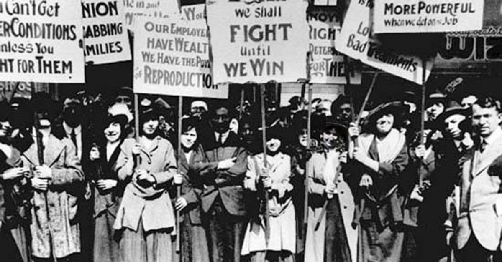
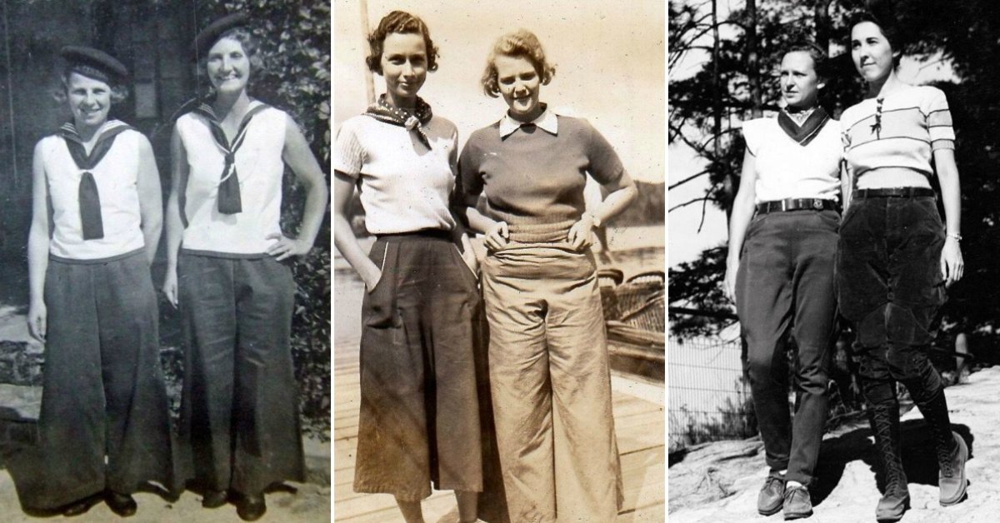
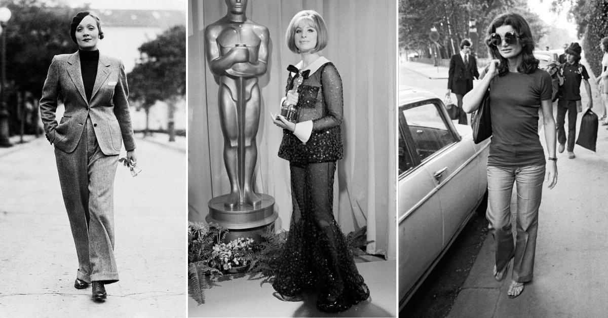

Különös belegondolni, hogy az a nadrág, amit ma reggel rutinszerűen magadra öltöttél, alig száz évvel ezelőtt még a közfelháborodás és a szabadosság szimbólumának számított. Ami nekünk ma természetes kényelem, az dédanyáinknak még a politikai lázadás és a női egyenjogúságért vívott harc egyik leglátványosabb eszköze volt. A női nadrág története nem csupán divattörténet, hanem egy kőkemény társadalmi utazás.
A nadrágviselés története szorosan összefonódik a feminista és szakszervezeti mozgalmakkal. Érdekes belegondolni, hogy a nők megünneplésének igénye már 1909-ben megjelent az Egyesült Államokban, amikor február végén tartották az első nemzeti nőnapokat. Az ipari forradalom alapjaiban forgatta fel a világot: a nők tömegesen jelentek meg a gyárakban, miközben a polgári rétegekben az asszonyok már a szavazati jogért és a tanulás lehetőségéért küzdöttek.

A ma ismert március 8-i dátum mögött tragikus és felemelő események állnak. Legyen szó a New York-i textilmunkásnők 1857-es sztrájkjáról vagy az 1908-as gyártűzben odaveszett munkásnőkről, a cél közös volt: elismerést és emberibb körülményeket kivívni.
Magyarországon az 1911-es években kezdtek elterjedni az első nadrágszoknyák. Bár ezek a lenge, közel-keleti stílusú darabok még inkább szoknyának tűntek, a korabeli egyház és a férfitársadalom így is gyűlölettel nézett rájuk. Az igazi áttörést azonban – ahogy oly sok mindent – az I. világháború hozta el.
Mivel a férfiak a fronton harcoltak, a nőknek kellett átvenniük a helyüket a gyárakban és a földeken. Itt derült ki igazán, hogy a nők mindenre képesek, és ehhez a klasszikus női ruhák, a fűző meg a nehéz szoknya csak akadály. A háború utáni években a szoknyák és a frizurák is rövidülni kezdtek, a kényelmetlen ruhadarabokat pedig felváltották a puhább melltartók. A nadrág pedig kitört a lovas sportok világából, és megkezdte hódítását a hétköznapi divatban.

Az átmenet nem volt zökkenőmentes. Luisa Capetillo szakszervezeti vezetőt például 1919-ben Puerto Ricóban még börtönbe is zárták, amiért nadrágot mert viselni az utcán. A folyamat azonban megállíthatatlan volt. A szórakoztatóipar sztárjai, mint Marlene Dietrich, Katherine Hepburn vagy a látnok Coco Chanel, sorra törték át a gátakat.
A II. világháború alatt a nők már természetes módon hordták a gyárakban férjük nadrágjait, majd a hatvanas évekre megérkezett az első női farmer és a női szmoking is. Amikor 1969-ben Barbra Streisand nadrágban vette át az Oscar-díját, vagy amikor Jackie Kennedy nadrágos szettjei megjelentek, végleg eldőlt: a nadrág a modern nő elválaszthatatlan része.

Ma már szerencsére nem az a kérdés, hogy társadalmilag elfogadott-e, ha egy nő nadrágot visel, hanem az, hogy milyen ökológiai lábnyomot hagyunk a környezetünkben egy-egy vásárlással. A textilipar napjainkra a világ egyik legszennyezőbb ágazatává vált, ezen belül pedig a farmergyártás foglalja el az egyik legvitatottabb helyet.
Kevesen tudják, de egyetlen új farmernadrág előállításához átlagosan 7.000-10.000 liter vízre van szükség – ez egyetlen ember több évnyi ivóvízkészlete. Ehhez adódnak még a gyapottermesztésnél használt növényvédő szerek és a festéshez szükséges agresszív vegyszerek, amelyek gyakran tisztítás nélkül kerülnek vissza a természetes vizeinkbe. A nadrágunk tehát, ami a szabadságunk jelképe, nehéz terhet ró a bolygóra, ha nem figyelünk oda.
A jó hír az, hogy a megoldás a mi kezünkben van, és nem igényel lemondást a stílusról, csupán egy kis szemléletváltást:
A meglévő darabok védelme: A legfenntarthatóbb ruha az, ami már ott lóg a szekrényedben. A megfelelő mosási technikákkal – például az alacsony hőfokon való tisztítással vagy a kifordítva mosással – évekkel meghosszabbíthatjuk kedvenc darabjaink élettartamát.
A secondhand mint etikus választás: A másodkézből való vásárlás az egyik leghatékonyabb eszköze a fenntarthatóságnak. Amikor egy már legyártott nadrágot választasz, gyakorlatilag „kiveszed” azt a szeméttelepre tartó körforgásból.
Kényelmes megoldások az AlmaKuckótól: Sokan a hosszadalmas keresgélés miatt kerülik a hagyományos üzleteket, de a webáruházban otthonról, pár kattintással válogathatsz a minőségi, gondosan ellenőrzött használt női ruha kínálatból. Legyen szó egy strapabíró nadrágról vagy bármilyen más alapdarabról, anélkül frissítheted a gardróbodat, hogy újabb értékes erőforrásokat pazarolnánk el a tömeggyártásra.
A női nadrág egykor a társadalmi lázadás szimbóluma volt. Ma itt az ideje, hogy a tudatos választás és a környezeti felelősségvállalás jelképévé tegyük. Viseljük a nadrágunkat büszkén, tudva, hogy a választásunkkal egy élhetőbb jövőt támogatunk!
Olvasd el ezt is: Új vagy használt? Fókuszban a fenntartható gyerekdivat — ha érdekel a környezettudatos öltözködés, ajánlom figyelmedbe előző cikkemet.